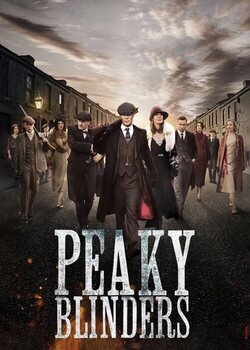
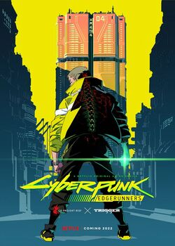

interstellar
es una película de ciencia ficción donde un grupo de astronautas viaja a través de un agujero de gusano en busca de un nuevo hogar para la humanidad, explorando temas de amor, sacrificio y la relatividad del tiempo.
es una película de ciencia ficción donde un grupo de astronautas viaja a través de un agujero de gusano en busca de un nuevo hogar para la humanidad, explorando temas de amor, sacrificio y la relatividad del tiempo.

es la culminación de la saga de los Vengadores. Después de que Thanos destruya la mitad del universo, los héroes sobrevivientes luchan por revertir el daño y restaurar el equilibrio, enfrentándose a grandes sacrificios y desafíos en el proceso.
sigue a John Wick, quien, después de ser excomulgado de la comunidad de asesinos, se convierte en un objetivo global. Con una recompensa millonaria sobre su cabeza, lucha por sobrevivir mientras busca aliados para enfrentar a aquellos que quieren su muerte.

sigue a Dominic Toretto y su equipo enfrentándose a Jakob, el hermano de Dom, quien se alía con un villano que amenaza la seguridad mundial. Mientras luchan para detener una conspiración global, los miembros del equipo deben confrontar su pasado y superar obstáculos que pondrán a prueba su lealtad y habilidades al volante.
un mercenario de élite, quien es contratado para rescatar al hijo de un poderoso criminal. Después de que la misión salga mal, Tyler debe enfrentarse a nuevas amenazas y luchar por sobrevivir, mientras intenta cumplir con su deber y proteger a aquellos que más le importan.
explora el origen de Arthur Fleck, un hombre marginado y con problemas mentales que vive en Gotham City. A medida que enfrenta el rechazo y la crueldad de la sociedad, Fleck se transforma en el villano conocido como el Joker, llevando a cabo un aterrador ascenso hacia el caos y la anarquía. La película aborda temas como la salud mental, la desigualdad social y la lucha interna del protagonista.
Peaky Blinders es una serie británica que sigue a los Shelby, una banda criminal liderada por Thomas Shelby, mientras expanden su poder en la Inglaterra de entreguerras. Con un estilo visual único, mezcla crimen, lealtad y traición en un contexto de agitación social.
 +Infoes una serie de ciencia ficción y misterio ambientada en los años 80, donde la desaparición de un niño en Hawkins, Indiana, revela un mundo paralelo peligroso, el "Upside Down". Mezcla horror, nostalgia ochentera y drama, con personajes entrañables y un enfoque en la amistad y la aventura.
 +Info
+Info
es una serie de drama criminal que sigue a Walter White, un profesor de química que, tras un diagnóstico terminal, fabrica y vende metanfetaminas con Jesse Pinkman para asegurar el futuro de su familia. La trama explora su transformación en el implacable "Heisenberg", con dilemas morales y enfrentamientos con poderosos enemigos. Es aclamada por su narrativa intensa y su exploración de la dualidad humana.
 +Info
+Info
es una serie de drama criminal que sigue a Oswald Cobblepot, "El Pingüino", mientras asciende al poder en los bajos fondos de Gotham tras los eventos de The Batman (2022). Interpretada por Colin Farrell, la historia explora su ambición, brutalidad y rivalidades en un Gotham caótico, ampliando el universo de la película.
 +Info
+Info
es un anime de acción y ciencia ficción que sigue a David Martinez, un joven que se une a mercenarios en la peligrosa Night City tras una tragedia. Ambientado en el universo de Cyberpunk 2077, aborda los riesgos de la tecnología y la lucha por la identidad, con animación vibrante y una trama intensa.
 +Info